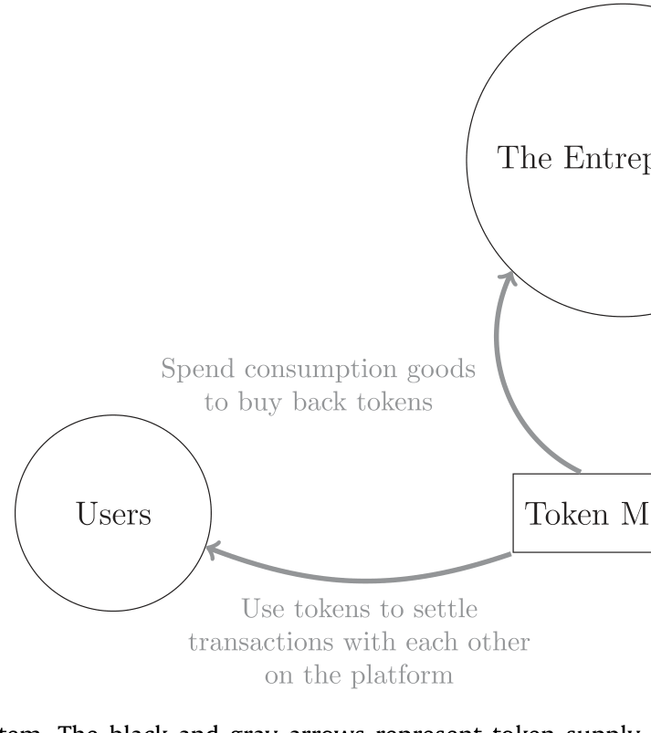
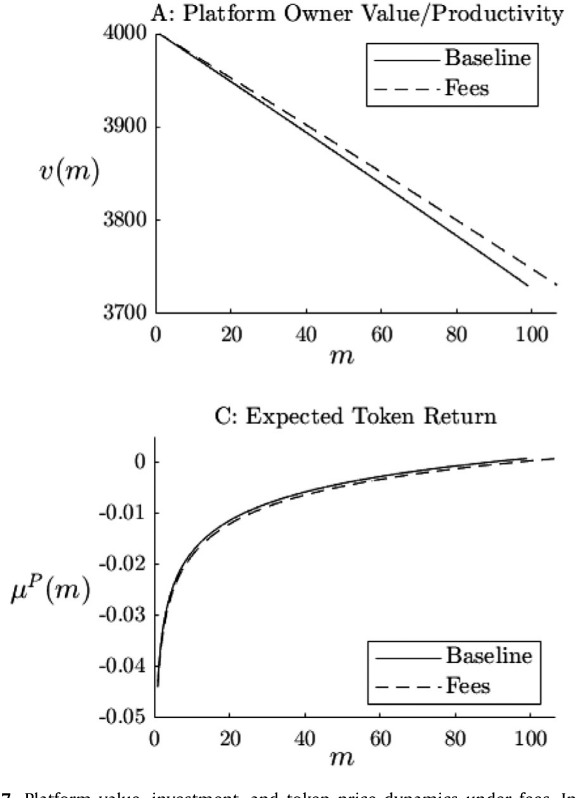
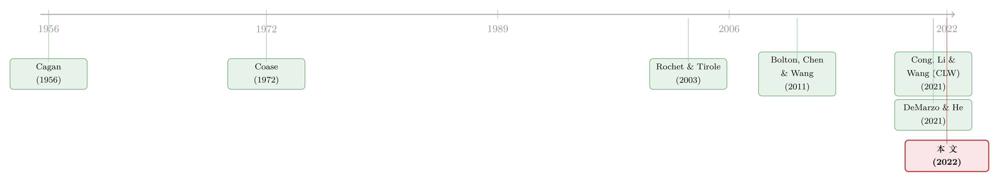

零成本的代币，为什么卖得出正的价格？
本文读的是 Cong, Li & Wang (2022, Journal of Financial Economics)：他们用一个连续时间动态模型刻画「代币驱动的平台经济」——代币既是用户之间的支付手段，又是平台融资搞投资的工具。核心结论有两层：其一，尽管造一枚数字代币的边际成本是零，平台却不会滥发，均衡币价是正的，代币像耐用品却偏偏「绕过了」Coase 猜想；其二，平台一旦要回购代币就得动用昂贵的外部资金，这把传统的外部融资成本「翻译」成了一个内生的发币成本，进而在平台主（内部人）与用户（外部人）之间撕开一道利益冲突，造成投资不足。而区块链的真正价值，是用「承诺」治好了平台主的时间不一致病。
1 一个零成本的东西，凭什么卖出正价？
先从一个看上去有点反常识的现象说起。
币安（Binance）和瑞波（Ripple）这样的平台，时不时会做一件事：把一批自家代币打到一个谁也拿不回来的「销毁地址」(eater address)，让它永远退出流通。业界管这叫烧币 (token burn)，目的是抬高币价、回馈持币人。可问题来了——既然造一枚数字代币的边际成本几乎是零，平台为什么不反过来无限增发、把币印到天上去？更进一步，一个边际成本为零、又能无限复制的东西，凭什么还能卖出一个正的价格？
熟悉微观经济学的读者，这时大概会想起 Coase 的那个著名猜想 (Coase, 1972)。耐用品垄断者的麻烦在于：今天卖高价的人都买完了，明天他总忍不住降价去赚剩下的需求；理性的消费者预见到这一点，干脆等着——结果价格被自己「卷」到边际成本。代币恰恰是一种极端的耐用品（永不损耗、边际成本为零），按 Coase 的逻辑，它的价格就该塌到零。
但现实没有。这就是本文要拆解的第一个张力。
本文给出的答案干脆利落：代币确实像耐用品，但它defy Coase's conjecture（绕过了 Coase 猜想）。原因在于，耐用品模型里需求是静止的（如 Stokey, 1981；Bulow, 1982），而平台代币的需求会随着平台投资、生产率提升而内生地增长。在一个需求不断长大的世界里，垄断者（平台主）反而愿意把发币、收钱的节奏「摊」到未来——今天少发一点、留着明天更值钱时再发——于是滥发的冲动被自然地摁住了，币价得以为正。
2 模型的三类人与那一个核心状态变量
接着，一个自然的问题是：这套机制要怎么写成一个能算的模型？
作者搭了一个连续时间经济，里面有三类人：
- 企业家（entrepreneur）：代表平台的创始团队、关键人员与风投，设计平台协议、管理代币的发行与回购。下文把它和「平台主」(platform owners) 当同义词。
- 贡献者（contributors）：现实中的矿工、第三方开发者、各类按需提供劳动的人。他们投入资源和劳动来提升平台质量，并即时拿到代币报酬。
- 用户（users）：在平台上做点对点交易、获得交易剩余。他们持有代币是因为代币能带来便利收益 (convenience yield)。

Figure 1: Token ecosystem. The black and gray arrows represent token supply
整个生态的代币怎么流转，论文用一张图概括得很清楚（如图 1）：黑色箭头是代币的供给，灰色箭头是代币的需求——贡献者拿到新发的币，转手卖给真正看重便利收益的用户；平台主在币多时回购销毁、币少时领取代币报酬。
而真正把这套动态串起来的，是一个核心状态变量：生产率归一化后的代币供给 (productivity-normalized token supply)，也就是代币总量与平台生产率之比。
这个比值的经济含义非常直观——它衡量「系统通胀了没有」。
- 当它低时（系统不「胀」），平台敢投资、敢给平台主发代币报酬；
- 当它高时（系统「胀」了），平台收缩投资、停止派币，甚至要回购代币、把币价托起来。
围绕这一个比值的高低，整篇论文的故事就转起来了。
3 平台的「投资—融资」引擎
然后，我们看平台是怎么把投资和融资拧在一起的。
平台的生产率（也就是质量）\(A_t\) 按下式演化——这是整个模型的发动机：
关键在于「钱从哪来」。平台想攒到 \(L_t\) 这么多贡献，需要付给贡献者一笔以计价品衡量的报酬 \(F(L_t, A_t)\)（关于 \(L_t\) 递增且凸）。但平台不直接掏现金，而是增发代币去付——给定币价 \(P_t\)，它需要发行
$$\frac{F(L_t, A_t)}{P_t}$$
这么多枚新币，这些币最终加到流通总量 \(M_t\) 里。
于是代币身兼二职：既是用户彼此交易的支付手段，又是平台搞投资的融资工具。而平台能靠发币融到多少资源，又取决于币价 \(P_t\)——币价越高，同样数目的新币能换来越多的真实投入。币价本身则由用户的需求与平台的供给在市场上内生地清算出来。投资、融资、币价，就这样被锁进了同一个循环。
这里有一个容易被忽略、却被作者反复强调的设定：代币是完全流动的。新发的代币不会因为信息不对称而打折，它就由「边际用户」的无差异条件简单定价。也就是说，本文制造投资不足的摩擦，不是靠传统的逆向选择或发行折价——恰恰相反，作者要说明：哪怕代币市场完美流动，财务摩擦照样会从另一个口子钻进来。
4 真正关键的一步：回购成本如何「翻译」成发币成本
但真正关键的一步在于——平台回购代币时，必须动用昂贵的外部资金。
回购虽然不常发生，可一旦它在「系统胀了」的状态下会发生，这件事就会通过预期渗透到每一个状态：因为每多发一枚币，平台主对「未来某天要花钱回购」的预期就相应地变了。作者由此推出一个极漂亮的结论——
平台主多发一枚币的成本（即延续价值的边际下降），大于这枚币的市场价格（即用户对它的估价）。
这道楔子 (wedge) 就是投资不足的根源。换句话说，平台的财务约束把「传统的外部融资成本」转译成了一个内生的发币成本 (endogenous token issuance cost)：每一笔投资在边际上都要为「将来可能的昂贵回购」预先埋单，于是平台在生产率上投资不足 (under-invest)。
这一步之所以漂亮，是因为它说明：完美流动 ≠ 没有摩擦。币价再怎么由市场公允定出，只要回购要靠外部融资，发币成本就内生地高于市价，投资就被压低。
5 利益冲突与「代币悬垂」
于是反转出现：这个发币成本，在平台主和用户之间制造了一道无法弥合的利益冲突。
逻辑链条是这样的：用代币去付的生产率提升，好处是用户的便利收益更高了——这部分收益用户分享；可代价是流通中的币更多了，未来昂贵回购的概率更高——这部分代价平台主独扛。投资的好处被分摊出去，投资的成本却留给自己，平台主的投资激励自然就被打压了。
更妙的是，平台主想把好处全收回来也做不到。用户在便利收益上是异质的：代币以一个公允的市场价在竞争性的用户之间成交，平台主无法做价格歧视，所以只有边际用户恰好盈亏平衡，那些更看重便利收益的「内边际用户」(inframarginal users) 享受到了正的剩余。这部分漏给用户的剩余，正是投资不足的来源。作者给它起了个很有画面感的名字——代币悬垂 (token overhang)。
读到这里，做公司金融的人应该会心一笑：这不就是债务悬垂（debt overhang）的「代币版」吗？只不过这里漏给的不是老债主，而是看重便利收益的用户。
6 病根是时间不一致，药方是区块链
那么，病根究竟在哪？
作者一针见血：在平台主的时间不一致 (time inconsistency)。事前（ex ante）看最优的投资水平，到了事后（ex post）、当平台主与用户的利益冲突浮现时，就被她自己认定为「投多了」。如果平台主能够承诺不搞投资不足，用户就敢要更多代币，币价和「平台主未来派币的价值」都会随之抬高——可她偏偏做不到这个承诺。
这恰恰是宏观里货币政策、财政政策那套经典的承诺难题（Kydland & Prescott, 1980；Barro & Gordon, 1983），也是近年公司资本结构研究的主题（DeMarzo & He, 2021）。（关于「短期负债如何替代承诺、治好相机抉择的食言」，可参见《中间商管不住自己的手——为什么「短债」反而治好了银行的食言》。）
而区块链的价值，正在这里浮现：它的不可篡改记账、智能合约、分布式设计，让平台可以承诺一套预先设定的发币规则，从而正面治疗时间不一致。

Figure 7: Platform value, investment, and token price dynamics under fees. In
作者于是做了一个对照实验：参照以太坊（Ethereum），考虑一个恒定发币率的承诺规则去为投资融资（如图 7 所示，比较了承诺前后平台价值、投资与币价的动态）。结果是——承诺缓解了投资不足：它斩断了「投资」与「发币成本」在每个状态下的逐点联动。虽然为投资多发了币会带来更频繁、更昂贵的回购，但平台主的价值反而高于相机抉择（discretionary）的情形，因为在更快的生产率与用户增长路径下，币价更高。
别把这篇论文读成「区块链万能论」。作者很克制地反复提醒：现实中区块链的承诺远非完美，可靠性也不是免费的（Abadi & Brunnermeier, 2018）。正因如此，模型的基准情形仍是「相机抉择 + 部分预设供给」并存，承诺只是其中一个可被引入、可被定价的维度。
顺带一提，这个框架还给稳定币 (stablecoin) 的设计提供了一个不同的视角：与其靠抵押品，平台主完全可以在「币多生产率相对低」时——也就是币价低、但削减供给的边际价值高的那一刻——偶尔回购代币来托住特许经营价值。这种内生的供给动态会平抑币价波动。结论很有意思：对那些生产率会内生增长的平台来说，它们的代币天然就是稳定的。
7 文献脉络
把这条线索捋一捋，会看到本文是怎么把好几股传统拧到一起的。
最上游是两条老河。一条是耐用品垄断：Coase (1972) 的猜想、以及 Stokey (1981)、Bulow (1982) 对静止需求下垄断者困境的刻画——本文从这里借来「为什么零成本的币能有正价」的问题，又用「内生增长的需求」给出了不同的答案。另一条是承诺与时间不一致的宏观传统：Cagan (1956) 的铸币税（本文里平台主本质上就是在最大化铸币税流的现值）、Kydland & Prescott (1980)、Barro & Gordon (1983)，再到把承诺问题搬进公司资本结构的 DeMarzo & He (2021)。

中游是平台经济与动态公司金融的合流：Rochet & Tirole (2003) 奠定了双边市场的分析，但没把代币当成平台的本地货币；本文继承了 Brunnermeier et al. (2019)「平台是一个货币区」的视角，又把动态公司金融里强调财务余裕与发行成本的传统（Bolton, Chen & Wang, 2011；Hugonnier et al., 2015；Décamps et al., 2016）接了进来——只不过管理的对象从「现金」换成了「代币供给」。
到了下游的加密文献，本文的直接母题是作者自己的 CLW（Cong, Li & Wang, 2021，发表在 RFS）。CLW 假定代币供给固定（这是文献的标准做法）；本文则把代币供给内生化，并引入平台主的长期利益（特许经营价值），从而能去问那些 CLW 问不了的新问题：最优的状态依存供给、投资—融资的动态、内部人与外部人的冲突、以及区块链的承诺价值。与同期的 Gryglewicz, Mayer & Morellec (2020)（聚焦创始人努力、且币价恒定）和 Mayer (2020)（引入投机者）相比，本文的落点在「代币作为支付手段」和「平台发射后的生命周期」。
（关于代币如何重塑市场竞争、以及去中心化记账的治理，本博客也有相关评述，可分别参见《把价签换成代币，弱者如何赢下价格战》与《谁来给账本盖章？——去中心化记账，到底什么时候才划算》。）
8 评论与延伸（Q&A + 研究方向）
(a) 几个可能的疑问
Q：代币既然完全流动、由市场公允定价，投资不足到底是从哪冒出来的？
不是从代币市场，而是从回购那一端。回购要靠昂贵的外部资金，这个传统的外部融资成本被「翻译」成了内生的发币成本，使得平台主多发一枚币的边际成本高于它的市价。这道楔子才是投资不足的来源。完美流动只是排除了「逆向选择/发行折价」这条常见渠道，反而凸显了财务摩擦的另一条路。
Q：这和债务悬垂（debt overhang）是一回事吗？
机制神似、对象不同。债务悬垂里，新投资的好处漏给了老债主；这里，新投资的便利收益漏给了内边际用户（那些便利收益高、却只按市场公允价付钱的用户）。因为代币在竞争性用户间以单一价格成交、无法价格歧视，平台主收不回全部剩余，于是欠投资。作者称之为「代币悬垂」。
Q：代币是耐用品，为什么没被 Coase 猜想拖垮？
因为 Coase 猜想成立的前提是静止需求。平台代币的需求会随平台投资、生产率提升而内生增长，外加网络效应放大（一个用户的采纳对其他用户是正外部性，机制上让人想起 Romer (1986) 的知识溢出）。在需求不断长大的世界里，垄断者愿意把发币摊到未来，滥发冲动被抑制，币价为正。
Q：「烧币」在模型里到底起什么作用？
它是平台主在「系统通胀」（归一化代币供给高）时，用外部资金回购并销毁代币、托住币价与特许经营价值的手段。关键时点恰好是币价低、但削减供给的边际价值高的那一刻——所以这套内生的供给动态会平抑而非加剧币价波动。
Q：区块链在这里是不是被夸大了？
作者相当克制。区块链的贡献被严格限定为「让预设的发币规则可承诺」，从而治时间不一致；而且明确承认现实中承诺远非完美、可靠性有成本（Abadi & Brunnermeier, 2018）。基准模型仍是相机抉择，承诺只是可被引入、可被比较的一个维度——正是这个对照让「承诺价值」得以被识别出来。
Q：这是个纯理论模型，结论可信吗？
它的可信度建立在内部逻辑的自洽与设定的现实性上，而非实证拟合。优点是把投资、融资、币价、用户基数全部内生化，给出了「发射后平台」最优货币—投资—派息政策的统一刻画；代价是，关键结论（如承诺提升价值）依赖于「回购需外部融资」这一核心摩擦的具体形式，换一种摩擦设定，比较静态未必照搬。
(b) 几个可能的研究问题与提案
- 代币悬垂的实证检验。
- 【经济故事】模型预言：流通代币相对生产率越高（系统越「胀」），平台投资越受抑制、回购越频繁。这是一个可被数据检验的横截面/时序含义。
-
【可行性】中。链上数据（代币供给、烧币事件、Gas/活跃地址作生产率代理）公开可得，但「生产率」与「投资」的度量需要细致构造；识别上可借烧币机制变更或协议升级作为准自然实验。
-
承诺的「价格」：从相机抉择到预设供给的事件研究。
- 【经济故事】本文预言承诺会抬高币价与平台价值。当一个项目从「团队可自由释放储备」切换到「硬编码恒定发币率」时，应能观察到币价与采纳的跳变。
-
【可行性】中。需要识别一批可信地、外生地引入供给规则承诺的事件；难点是承诺往往与其他治理变化同时发生，需控制混杂。
-
把框架搬到公司债/信用市场：把「回购代币」类比成「回购债务」。
- 【经济故事】平台「币多时回购、币少时派息」与企业「贵时回购债务、便宜时增发」结构同构；时间不一致与外部融资成本同样在场。可检验信用市场里「内生发行成本→投资不足」这条链。
-
【可行性】中到高。Mergent FISD、TRACE 等数据成熟，发债—回购事件可观测；识别外部融资成本冲击是关键（如评级临界、货币政策冲击）。这是把本文机制接回传统信用市场最自然的一步。
-
异质便利收益与「内边际用户」的福利分配。
- 【经济故事】本文指出剩余漏给了便利收益高的用户。谁是这些用户、漏出多少剩余、是否随平台成熟而变化，本身就是一个分配问题。
- 【可行性】低到中。需要用户层面的代币使用与持有数据来估计便利收益的异质性，链上地址匿名且行为噪声大，识别便利收益本身就很难。
9 参考文献与我的判断
我的判断。 这篇论文最漂亮的贡献，是把一个看似纯加密的现象（烧币、ICO、恒定发币率）干净地映射回公司金融的两个老问题——外部融资成本与时间不一致——并证明「完美流动的代币市场」并不能免疫财务摩擦：只要回购要靠外部资金，发币成本就内生地高于市价，投资不足与代币悬垂随之而来。这种「把新瓶装回旧酒、又让旧酒讲出新味」的功力，是顶刊理论文章的范本。它也第一次系统地内生化了代币供给，把 CLW 的「固定供给」推进到「最优状态依存供给」，并由此识别出区块链的承诺价值。
对识别（这里是模型机制）的担忧。 几乎所有反转都挂在「回购必须动用昂贵外部资金」这一条假设上。它在直觉上合理，但结论对它的具体形式相当敏感：若平台能用经营性现金流或预留储备低成本回购，楔子就会收窄，投资不足与承诺价值都会被削弱。此外，「区块链=可信承诺」在现实中是个强假设——分叉、治理俘获、规则的事后修改都会侵蚀承诺，而模型把这部分留给了脚注和基准情形的并存设定。
后续想看到什么。 我最想看到的，是把这套机制实证化：用链上的烧币事件、供给规则变更去检验「归一化代币供给↑ → 投资↓、回购↑」的核心预言；以及把它接回信用市场，看「内生发行成本造成投资不足」这条链在传统企业的发债—回购行为里是否同样成立。对做公司债与流动性的人来说，后者尤其诱人。
参考文献
- Barro, R. J., & Gordon, D. B. (1983). A positive theory of monetary policy in a natural rate model. Journal of Political Economy 91(4), 589–610.
- Bolton, P., Chen, H., & Wang, N. (2011). A unified theory of Tobin's q, corporate investment, financing, and risk management. Journal of Finance 66(5), 1545–1578.
- Brunnermeier, M. K., James, H., & Landau, J.-P. (2019). The Digitalization of Money. Technical Report, Princeton University.
- Bulow, J. I. (1982). Durable-goods monopolists. Journal of Political Economy 90(2), 314–332.
- Cagan, P. D. (1956). The Monetary Dynamics of Hyperinflation. University of Chicago Press.
- Coase, R. H. (1972). Durability and monopoly. Journal of Law and Economics 15(1), 143–149.
- Cong, L. W., Li, Y., & Wang, N. (2021). Tokenomics: Dynamic adoption and valuation. Review of Financial Studies 34(3), 1105–1155.
- Cong, L. W., Li, Y., & Wang, N. (2022). Token-based platform finance. Journal of Financial Economics 144(3), 972–991.
- DeMarzo, P. M., & He, Z. (2021). Leverage dynamics without commitment. Journal of Finance 76(3), 1195–1250.
- Gryglewicz, S., Mayer, S., & Morellec, E. (2020). Optimal Financing with Tokens. Working Paper, EPFL / Erasmus University Rotterdam / Swiss Finance Institute.
- Kydland, F. E., & Prescott, E. C. (1980). Dynamic optimal taxation, rational expectations and optimal control. Journal of Economic Dynamics and Control 2, 79–91.
- Mayer, S. (2020). Token-Based Platforms and Speculators. Working Paper, Erasmus University Rotterdam.
- Rochet, J.-C., & Tirole, J. (2003). Platform competition in two-sided markets. Journal of the European Economic Association 1(4), 990–1029.
- Stokey, N. L. (1981). Rational expectations and durable goods pricing. Bell Journal of Economics, 112–128.